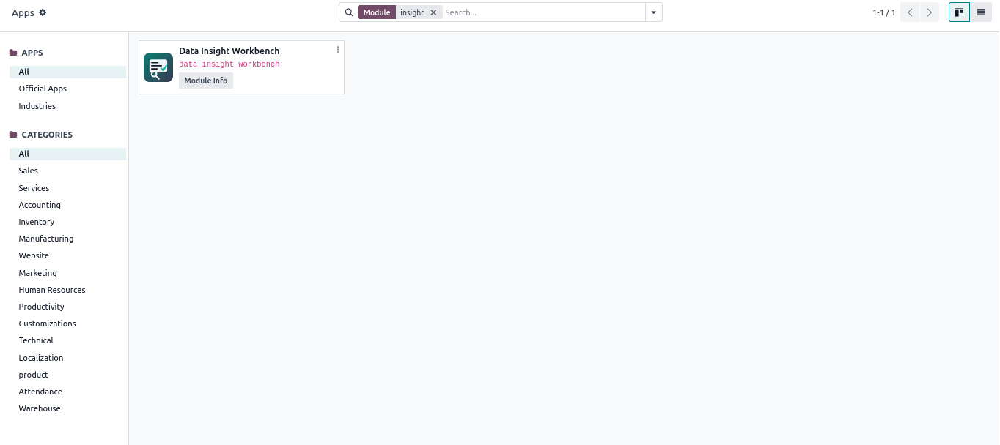
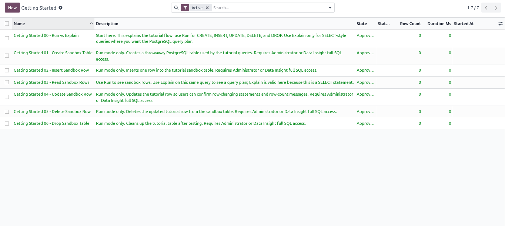
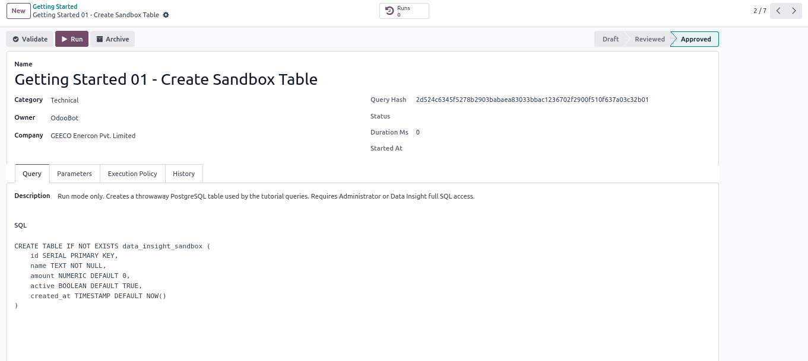
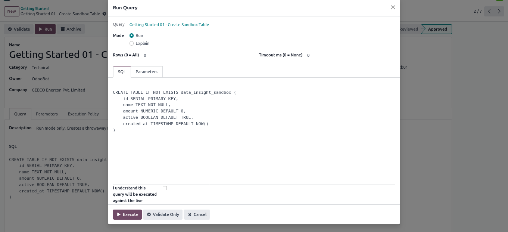
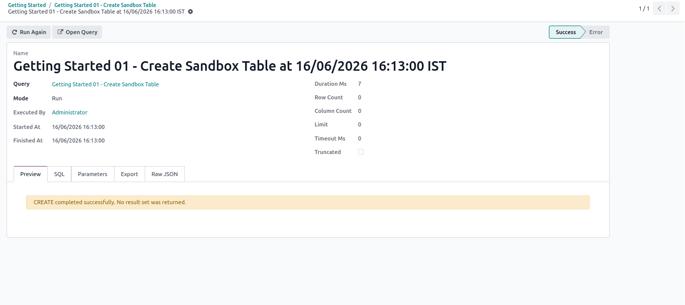

Full Edition
A controlled SQL workbench for Odoo administrators and trusted power users, with saved queries, execution history, localized timestamps, previews, CSV exports, and explicit full-access controls.
Create reusable SQL assets with descriptions, parameters, approval state, and execution policy.
Normal users stay protected by a read-only SQL guard. Admins can grant full SQL power per user.
Every run records status, duration, result preview, raw JSON, SQL text, and exportable output.
The module ships with sandbox tutorial queries. Users can learn the correct flow without touching business data: create a throwaway table, insert a row, read it, update it, delete it, and clean up the table. Use Run for CREATE, INSERT, UPDATE, DELETE, and DROP. Use Explain for SELECT query plans.
Reader and executor users stay protected by the SQL guard. Administrators can grant full SQL access from the user form when a trusted user needs live maintenance power. Query records, parameters, and execution history are only removable by Data Insight administrators.
The module appears in Apps with its custom Data Insight icon and module identity.

The Getting Started menu shows the sandbox query sequence in order.

Each query includes a purpose-driven description, SQL editor, approval status, and run controls.

Execution is explicit: choose Run or Explain, review SQL, confirm acknowledgement, then execute.

The execution page shows local user time, status, duration, SQL, parameters, result preview, and export options.
